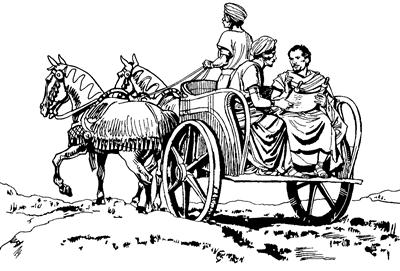

“Yesusag ‘Sikne,’ aro seneragtop nimi seklebaik” aro olamsieka (8:1-3)
8
1-2 Stefanus obekpa, tebaogne sembe Saulus awi sembaog. Awi sembaog aghana yog nimi Allah yubu ka'elamekti, ulamek nimi taneko wamekti, Stefanus obeka aneko keyapto so'oag sikekti, o'ona lelem engero wamek.Stefanus obek sum eneko Stefanus obek nimiri “Seklebaik” aro alnibaekti, Yesusag “Sikne” aro seneragtop nimi taneko maiknoro malia ulamsiek. Malia ulamsiekpa, Yesusag seneragtop nimi as Yerusalem laplobi agha mog so'o Yudeaap Samariaap tala-tala nimi wamekag piekti, a'ero-a'ero wamek. Yesusti wepto pogsiognang a'o bare abenekoog Yerusalem wamek. 3 Yerusalem wamekpa, Saulusti “Yesusag ‘Sikne’ aro seneragtop nimi opsunun,” aro ae taneko sen-senna elamsiog. Ae taneko sen-senna elamsiogti, kabuni kelabo aeag agha kiliro-kiliro kop aeag tobonglamsiog.
Yesus yubu walinge mog so'o Samaria nimi ambatsieka (8:4-25)
4 Yesusag “Sikne” aro seneragtop nimi kop aeag tobonglamsiekpa, “Nu Yesusag seneragtop nimi opsiikag,” aro as Yerusalema lambaekti, piekag anekoa nimi tala-tala nimiag yubu walinge Yesus sembe ambarelamsiek. 5 Ambarelamsiekti, Yerusalema lambaekne nhon Filipus neneko babe mog so'o Samaria as nubunge nhon wamogne nenekoag piog. Nubu as nenekoag piogti, Allahri “Taulbahimendi, saelbamsululam,” aro wepto poghol aogne Yesus sembe mog so'o Samaria nimiag ambarelamsiog. 6-7 Yubu ambarelamsiogti, Filipusti nimi whingag ulamognena, “Allah Eldamne mikipneri el pere agha ulamla” senenne kekneba ulamog. Phia nimi kulomag ulamsiogne yag lanalamsiogpa, haum alamekti lanalamek. Nimi yan malinge babe, nimi lebe arop kom nimi babe Filipusti wali nenelamsiog. Undo unulamogne kembiagha Samaria nimiri sol wali, wali uro ma'aptangto ambarelamsiogne ka'elamek. 8 Filipusti nimi maikno wali nenelamsiogti, yubu walinge Yesus sembe ambarelamsiogpa, nimi as eneko wamek nimiri awi maikno senelamek.
9-11 As eneko nimi nhon sina Simon mema mili lero phalamogne wamog. Samenag agha as enekoag mema phalamogne wamogpa, as enekoag wamek nimi niri, “Yaghe, mane agha ual,” senelamek. Undo senelamekpa, Simon ponekori, “Na maneagne pone nubunge wamna,” aro ambarelamsiogti, mema mili lero phalamog. Phalamogha sembe Samaria nimi ologne nubunge ni tanekori seneraglameknena, “Allah Eldamne mikipne Simon pone kulomag piamlaba, Simon pone ‘Mikip Sirikne',” aro si lelamek. Simondi samenag agha hengkun taibuka taubuka ulamogha mema ulamogne kembiag agha Samaria nimi niri, “Yaghe, mane agha ulamla,” senelamek. “Mane agha ulamla” senena ulamogne sembe eldi yubu ka'elamekti, sindi babe ulamek. 12 Simondi yubu ka'elamek aghana Filipus mog so'o Samaria yaogti, yubu walinge Yesus sembe ambarelamsiogti, “Allahri ‘Mog so'oag nimi taulbahimendi, saelbamsululam,’ aro wepto poghol aogne si Yesus wamla. Mog so'oag nimiri Yesusag ‘Sikne’ aro seneraghikpa, Elag seneragtop nimi Allahri saelbamsilul,” aro Filipusti ambarelamsiog. Ambarelamsiogpa, Simondi yubu samen ka'elamek nimi mog so'o Samaria wamek nimi taneko Filipusti ambarelamsiogne ka'elamekti, “Sik uro ambarelamsil” aro seneraglamek. Nengabo kelabo Samaria wamek nimi “Sik” aro seneraglamekti, “Filipusti ambarelamsilne saelbamukap,” aro elag yalamekpa, maghag pelengelamsiog. 13 Simon poneko babe, “Yesus sembe ambarelamsilne sik,” aro seneraglamogpa, Filipusti maghag pelengkaog. Simon babe Filipus nelepto elap pang-yang ulamdek. Pang-yang ulamdekpa, Filipusti nimiri uanep komne, Allah Eldamneri uanepne, “Allah Eldamne mikipneri el pere agha ulamla” senenne kekneba mikip uro ulamogpa, Simondi, “Yaghe, mane agha ulamla,” alamog.
14 Yesusti wepto pogsiognang as Yerusalema ka'elamekpa, “Mog so'o Samaria wamang nimiri Allah yubu ka'elamangdi, Yesusag ‘Sikne’ aro seneraglamang,” ana ka'ebaekti, Petrusap, Yohanesap wepto pogsiek. 15-17 Petrusap Yohanesap anam yan komag agha, Filipusti ambarelamsiogti, “Si Yesus engeropneag ‘Sikne’ aro seneragmunba, Yesusti saelbamsilul,” aro Samaria nimi maghag pelengkipsiog. Maghag pelengkipsiog aghana Allah Eldamne Yame Walinge Samaria nimi nhonag babe pelengel aog kom. Ane sembe Petrusap, Yohanesap pogsiekpa, Samaria pirekti, Samaria nimi usoghag sae saelbamsirekti, Allahag mololamdekti, “Andamne Yame Walinge sin Samaria nimi taneag tatsululam,” aro molona molbarek.
Wene aro molbarekpa, Allahri Eldamne Yame Walinge sin nongag palilamsiog. 18-19 Yesusti wepto pogsiognangdi nimi usoghag sae pipsiekpa, Allahri Eldamne Yame Walinge sin nongag palilamsiogpa, Simon ponekori kembahiog. Kembahiogti Yesusti wepto pogsiognangag kal ma'al payaogti, Simon ponekori yubu lelamogti, “A'undi nimi usoghag sae palilamsiromba, Allahri Eldamne Yame Walinge nimi tane nongag palilamsil. A'undi ulamdomne saog uro nari babe uanun. Kal ma'al ane tatsineba, mikipne ane tatnurumunba, nimi usoghag nari sae palilamsineba, Allahri Eldamne Yame Walinge nimi nongag palilamsilul,” seog.
20 Wene seogpa Petrusti, “Allahri, ‘Mo tatsinun,’ senelamlange nene andina ‘Kamna kal ma'alag kapto tomnep,’ senelamlam, te? Senelamlamne ane sembe anap anenge kal ma'al eneap tebalulam! 21 Andi wanaag Allahri seneragna sunsunum uro seneraglamlam kom. Ane sembe nuri sae nimi usoghag palilamsiapne, olog babe tam andinge tanep kom. 22 Allahri anap, andinge kal ma'alap kom nembaghenep ane sembe, malia ualamne nene wali uro seneragmendi lipsululam. Lipsimendi, ‘Malia uanne tam orog nembalulam,’ aro Nuni Allahag mololapmenba, ‘Malia wanaag seneraglamlamne nene Allahri tam orog nembalul to, kom to?’ aro mololame. 23 Andi wanaag seneraglamlamne sembe na el tan. Andi wanaag yonge meso pungkulamlaba, andi mali-malia ulamlamneri wana sao kauplangkelba, ulamlam,” seog.
24 Wene seogpa Simondi sin phendeag yubu lelamogti, “A'undi leptomne nanag taleagti, a'undi na sembe yepto A'uni Allahag molbarurom,” seog.
25 Seogpa, wameka, Petrusap Yohanesapti, “Allahri nimi el uro ua unne kekneba Yesus sembe maikno ulamogpa, ibubu,” aro Nuni Allah yubu ambarelamsirekti, as Yerusalem samoro yalamdek. Yalamdekti mog so'o Samaria as maikno wa'iro yubu walinge Yesus sembe ambare-ambare Yerusalem yarek.
Filipusti Yesus sembe tibin nenero Etiopiange nimi nubunge nhon ambarogha (8:26-40)
26 Petrusap Yohanesap as Yerusalem yarekti, wamdekpa, sikinkae Filipus Samaria mog so'oag wamog. Wamogpa, Nuni Allahri Eldamneri arukna imagne malaikat nhon poghol aogne Filipus Samaria mog so'oag wamoghag piog. Piogti, Filipusag yubu lelamogti, “Sekmendi, Yerusalem simbik pimendi, ina as Yerusalema as Gaza kuluptop ina waghag pululam. As Yerusalem anabi as Gaza anabiag ina pai aldes saoghag wamlange nene toman pululam,” seog.
27 Wene seogpa Filipus sekom agha piog. Piogti tilamogpa, Etiopiange nhon nimi nubunge yalamog. Mog so'o Etiopia nimi yubu sia lerop kel si Kandake arukna wamogti, Kandake kel eneringe sae agha piamogne yalamog. El neneko as Yerusalem Allah omekel piogti, samoro yalamog. 28 Samoro yalamogti, kereta alibag pukamogpa, pham kudari kiliro payalamog. Kereta alibag pukamogti, mome Yesaya Allahri yubu silimu tiptopneri mome tobogne Etiopiangeri eldi saeag saelbamogti, keme-keme yalamog. 29 Keme-keme yalamogpa, Allah Yame Walinge nenekori Filipusag, “Elem-elem pimendi, pham kudari kereta kiliro payalamla peramag ane pululam,” seog.
30 Wene seogpa, Filipus elem-elem kereta yalamogha peramag piogti, ka'elamogpa Allahri yubu silimu tiptopne Yesayari mome toro pibogne Etopiangeri kemero lelamogha Filipusti ka'ebaog. Ka'ebaogti, “Nani, yubu leple yalamlam yubu ene wanaag olog el talam te?” aro haibaog.
31 Haibaogpa nimi nubunge ponekori, “Nimi amoro el nenehin nang orog wamnaba, welaro el tanep?” seog.
Wene seogti Filipusag, “Walel amenba, nhon pununam,” aro molbaogpa, Filipus neneko kereta alibag waelbaogti, Etopiange peramag pulingkiog.

Filipus kereta alibag waelbaogti, Etiopiange poneko peramag pulingkiog. (ACT 8.31)
32 Yesayari mome toro pibogne leple yalamogne lilimna ane:
“ ‘Pham domba obukap,’ aro pabirop saog uro
El babe pabiek.
Nimiri pham domba hong kareplamangba, pham domba yubu lemna kom ua urop saog uro,
El babe yubu koma wamogpa obek.
33 El nimiri ali nenero yubu lero loloroba lelamekpa, tam Elag taog.
Elag tam pibekne wali uro kemban koma El ya'ag obekpa, tebaog. Tebaogne sembe,
Nimi nhondi babe ‘Eldi mabo tane wamang,’ aro lemnep kom,”
aro mome toroba leple yalamog.
34 Etiopiange ponekori Filipusag hailamogti, “Nari anag hailangkenne, Allahri yubu silimu tiplamogne poneri etne sembe mome toro pibogti lebog? Eldamne sembero, nimi orange sembero?” seog.
35 Wene aro haibaogpa, Filipusti leple yalamogne neneko Yesayari mome toro pibog yubu aneko sirik kiliro yubu walinge Yesus sembe tibin nenero ambare-ambare palamog.
36 Wene aro ambare-ambare palamogpa, inaag mag sinag wamoghag pirekti, nimi nubunge Etiopiange ponekori Filipusag, “Ane mag wamla ane. Tibogae. Tam olog wamla, te? Na andi maghag pelengkanei,” seog.
37 Wene seogpa Filipusti, “Andi Yesusag ‘Sikne’ aro wanaag seneraglamlam tanena, maghag pelengkaghenun,” seog.
Wene seogpa Etiopiange ponekori, “Seneraglamnange, ‘Allahri, “Mog so'oag nimi taulbahimendi, saelbamsululam,” aro Elme Yesus wepto poghog' aro sik uro seneraglamna,” seog. 38 Etiopiange poneko eldi arukna kereta pham kudari kiliro payalamogne ponekoag “Babitlulam,” seogpa, babogpa, “An ane wamlulam,” seog. Seogti sin mag sinag nhon yingkirekti, Filipusti Etiopiange poneko maghag pelengkibog. 39 Maghag pelengkibogpa, walel alamoghag agha Nuni Allah Yame Walingeri Filipus poa piogpa, Etiopiange ponekori Filipus ibog kom. Ibog komdi Etiopiange poneko awi yeng sene-sene elengeag sip palamog. 40 Allahri Filipus pabiogpa, as Asdod yaog. As enekoag agha, “Yesus sembe ambarelamsinun,” aro as Kaisarea anabi Asdod anabiag as ni wamekne yubu walinge ambare-ambare palamsiogti, Kaisarea piog.